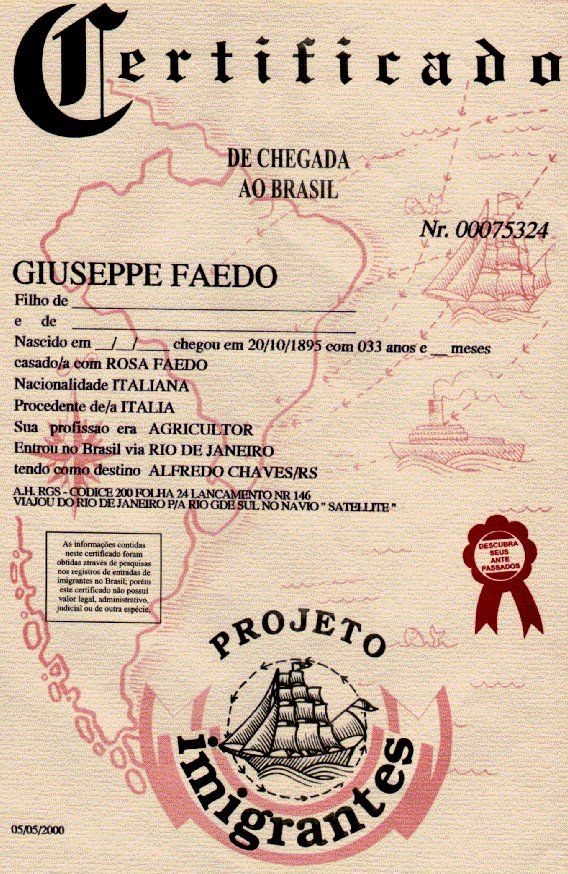
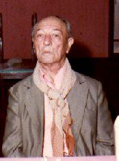
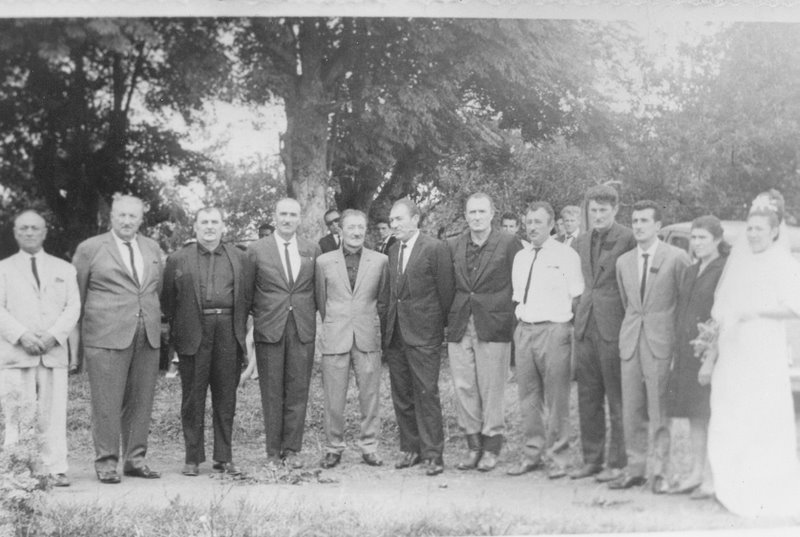
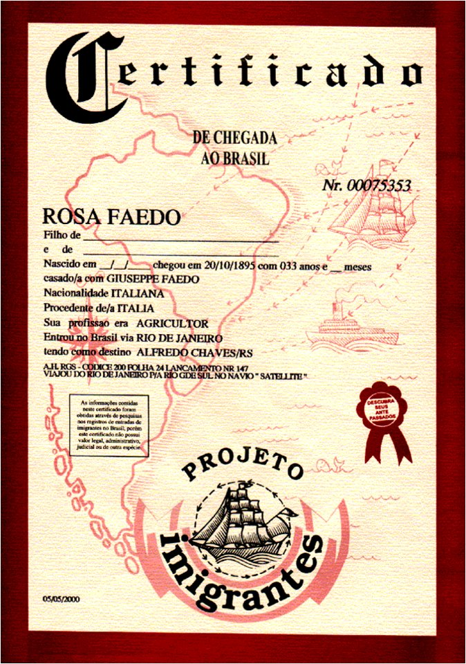
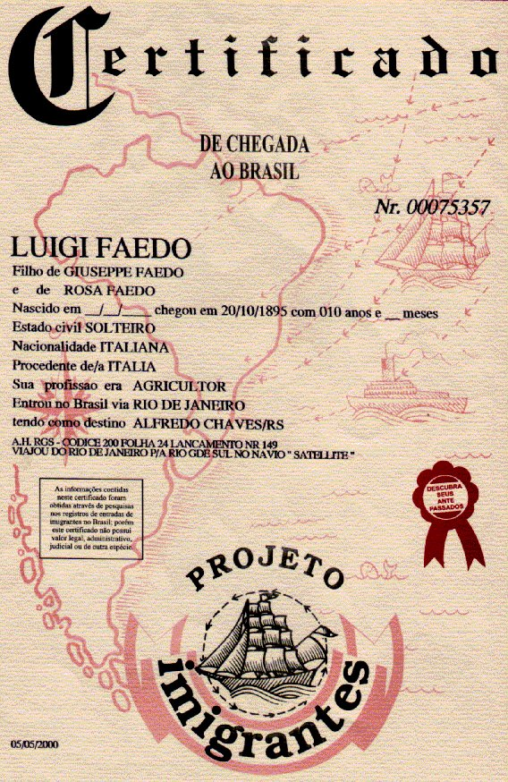

✨ Bem-vindos ao Novo Portal Eternizado da Família Faedo!
Este portal preserva 100% dos textos, biografias, poemas, árvore genealógica, certificados de imigração e fotografias em resolução máxima do projeto histórico da família (originalmente publicado em familiafaedo.blogspot.com), agora organizado, restaurado e enriquecido com um Dossiê Completo para Cidadania Italiana.
Monte Faedo, Vicenza (Vêneto)
Natural de Monte Faedo (Comune di Monte di Malo, Província de Vicenza), Giuseppe Faedo (Josep Faedo), filho de Luizi Faedo e Margarida Dalban, veio conhecer a América em 1891, atuou na colonização de Nova Bassano (1892) e desembarcou definitivamente em 20/10/1895 com a esposa Rosa Vicário e os filhos Luiz Antônio (Luigi) e João ("Joanim") em Alfredo Chaves (Veranópolis - RS).
Do Rio Grande do Sul a Francisco Beltrão
De Veranópolis e Nova Bassano, a família expandiu raízes por Bento Gonçalves, Marau, Água Santa e Passo Fundo (RS). Em 1942–1945, Luiz Antônio Faedo, seu irmão João Faedo ("Joanim") e o irmão paterno Vitório Faedo protagonizaram o desbravamento histórico da antiga Vila Marrecas (atual Francisco Beltrão - PR).
Dossiê de Cidadania Italiana
Os 3 Certificados Oficiais de Chegada ao Brasil (Códice 200, Folha 24, Lançamentos 146, 147 e 149 do Arquivo Histórico do RS) foram auditados e transcritos. Preparamos um guia completo com a Comune italiana exata, variações de nome para a CNN e cartórios no RS e PR.
Documentos & Retratos Emblemáticos do Acervo
Clique em qualquer imagem para ampliar em alta resolução ou baixar o arquivo original.

20/10/1895Certificado de Chegada — Giuseppe Faedo
Códice 200, Folha 24, Lançamento Nr. 146 — Navio "Satellite", destino Alfredo Chaves (Veranópolis/RS).


PioneiroLuiz Antônio Faedo (Luigi Faedo)
Pioneiro desbravador de Francisco Beltrão - PR, proprietário da 1ª habitação construída na antiga Vila Marrecas.


Século XXPrimeiras Gerações da Família Faedo no Brasil
Luiz Antônio Faedo (à esquerda) ao lado dos filhos de João Faedo e Erina Ferlim.

📜 A Saga da Família Faedo: Da Itália ao Brasil
Linha do tempo histórica, biografias dos pioneiros e o poema "O Velho Guerreiro".
Nascimento de Giuseppe Faedo (Josep Faedo) e Rosa Vicário
Natural de Monte Faedo (fração de Faedo, Comune di Monte di Malo, Província de Vicenza, região do Vêneto, Itália), Giuseppe Faedo (Josep Faedo) era filho de Luizi (Luigi) Faedo e Margarida (Margarita) Dalban. Agrimensor prático e técnico em vinicultura, casou-se na Itália com Rosa Vicário Faedo, onde nasceram seus primeiros filhos, incluindo Luigi Faedo (Luiz Antônio Faedo) e João Faedo ("Joanim").
Primeira Viagem à América e Colonização de Nova Bassano
Em 1891, Giuseppe Faedo veio conhecer a América deixando inicialmente a família na Europa, percorrendo a Argentina e o Uruguai. Em 1892, graças aos seus conhecimentos como agrimensor prático e técnico em vinicultura, foi convidado para orientar a colonização italiana na região da futura cidade de Nova Bassano, no Rio Grande do Sul. Em seguida, retornou à Itália para buscar a esposa e os filhos.
Desembarque Oficial da Família no Brasil (Navio "Satellite")
Em 20 de outubro de 1895, Giuseppe Faedo (33 anos, Lançamento Nr. 146), sua esposa Rosa Vicário Faedo (33 anos, Lançamento Nr. 147) e os filhos (incluindo Luigi Faedo / Luiz Antônio Faedo, com 10 anos, Lançamento Nr. 149, e João Faedo) desembarcaram oficialmente via Rio de Janeiro e seguiram no Navio "Satellite" até o Rio Grande do Sul, com destino à colônia de Alfredo Chaves (atual Veranópolis - RS), conforme registrado no Códice 200, Folha 24 do Arquivo Histórico do RS.
A Forja e as Raízes Gaúchas: João Faedo ("Joanim") e Erina Ferlim
Passando por Bento Gonçalves e pelo Rio da Casca rumo a Marau - RS, João Faedo casou-se com Erina Ferlim, tendo 12 filhos. Conforme o relato histórico do filho Ângelo Alberto Faedo ("Angelim", nascido em 24/11/1927 em Passo Fundo - RS):
"Meu pai tinha 5 alqueires de terra e uma Ferraria. Nos primeiros anos o pai trabalhava no porão de casa, depois fizeram a ferraria onde ele fazia foice, foice de cortar trigo até navalha de cortar barba — ele temperava e, se não prestasse, dava outra. João Faedo tirava o sustento da pequena ferraria e toda ferramenta que um ferreiro pôde fazer meu pai fazia, e meu irmão José Faedo aprendeu com meu pai; José fazia até motor de carro. E na colônia de terra nós plantávamos trigo, batata. No meio da cidade de Água Santa tinha um quiosque para tomar chimarrão! O Sr. João Faedo morou na cidade de Marau, 2 vezes moraram na Vila Marrecas no Paraná (atual Francisco Beltrão) e posteriormente moraram em Água Santa, onde morreram e criaram suas raízes."
Nascimento de Vitório Faedo
Em 07 de novembro de 1911 nasce Vitório Faedo, filho de Giuseppe Faedo (José Faedo) e Narciza Pereira — irmão paterno de Luiz Antônio Faedo e João Faedo ("Joanim"). Casou-se com Angelina Ferneda, com quem teve 10 filhos.
A Cavalgada Histórica de Luiz Antônio Faedo até o Rio Marrecas
Na década de 1930, Giuseppe Faedo e seu irmão João (interessado por pedras preciosas) visitaram o Paraná e incentivaram Luiz Antônio Faedo a conhecer as terras férteis do Sudoeste. Após uma primeira viagem a cavalo de 18 dias entre Passo Fundo e Mariópolis por volta de 1940, em outubro de 1942 Luiz Antônio Faedo e seu irmão João Faedo ("Joanim") fizeram o reconhecimento da região da futura Francisco Beltrão.
Em 13 de maio de 1943, no recém-criado Território Federal do Iguaçu (governo Getúlio Vargas), após uma viagem a cavalo que durou mais de um mês desde o Rio Grande do Sul, Luiz Antônio Faedo chegou às imediações de Clevelândia - PR, adquirindo uma propriedade às margens do Rio Pato Branco (onde ficou seu filho Adão Faedo). No mesmo ano, abrindo picadas na mata virgem, chegou às margens do Rio Marrecas, onde conheceu Sebastião Müller (mais tarde seu compadre).
Fundação do Povoado de Francisco Beltrão e Chegada de Vitório Faedo
Em 1945–1946, Luiz Antônio Faedo estabeleceu-se em definitivo em Marrecas e comprou a posse de aproximadamente 100 hectares de terras de Sebastião Müller — exatamente onde hoje se situa o centro da cidade de Francisco Beltrão (sendo o seu rancho considerado a Foto N.º 4 / primeira habitação construída em Marrecas). Para impulsionar o povoado que nascia, Luiz Antônio vendia terrenos em longas prestações e doava um ou dois pinheiros para cada novo morador derrubar e construir sua casa. Também doou à comunidade o terreno da Praça Eduardo Virmond Suplicy e do Cemitério Municipal, além de vender a baixo preço o terreno do atual Colégio Nossa Senhora da Glória.
Também por volta de 1945, seu irmão paterno Vitório Faedo e Angelina Ferneda viajaram 21 dias em carroças puxadas por mulas do RS até Francisco Beltrão com os 6 primeiros filhos (Verônica, Antoninho, Irineu, Terezinha, Maria e Luiz), residindo próximo ao Seminário São José (Bairro Vila Nova) até 1953, mudando-se para Enéas Marques e, em 1960, para a Comunidade de Divisor, onde nasceram os filhos mais novos (Natalina, José, Lurdes e Inez).
Avenida Luiz Antônio Faedo e Praça Josep Faedo
Em 16 de junho de 1969, faleceu na Comunidade de Divisor o pioneiro Vitório Faedo, aos 58 anos. Em 03 de junho de 1984, numa ensolarada tarde de outono, faleceu aos 90 anos o patriarca pioneiro Luiz Antônio Faedo, homenageado pelo município com o nome de uma das principais vias públicas do centro da cidade: a Avenida Luiz Antônio Faedo.
Em outubro de 2009, a Prefeitura de Francisco Beltrão revitalizou e reinaugurou no centro da cidade (Rua Palmas) a Praça Josep Faedo em homenagem ao patriarca imigrante italiano, solenidade que contou com o discurso emocionante de Sara Faedo da Costa, neta de Luiz Antônio Faedo: "Esta obra valoriza o lugar. Meu avô gostava tanto daqui, tanto que deixou tudo e veio pra cá da região de Passo Fundo (RS)."
"O Velho Guerreiro"
E trouxe a bruaca, carregada de humildade!
E quando cheguei por aqui!
Com coragem eu construí, uma nova cidade!
Na minha carroça eu carreguei muita sabedoria!
Porque no fundo eu sabia!
O que Vila Marrecas se tornaria!
A minha casa abençoada!
Desbravando um novo mundo!
Nas terras por onde passei!
O meu nome deixei!
Com coragem e sem medo!
Meu sangue é italiano, sou gaúcho com tradição!
Meu nome: Luiz Antônio Faedo!
Pioneiro de Francisco Beltrão!
— Autor: Leandro de Souza Faedo (Em homenagem a Luiz Antônio Faedo, 12/04/2012)
🌳 Árvore Genealógica Completa da Família Faedo
Todos os ramos, gerações, cônjuges e descendentes catalogados nos documentos, fotos e depoimentos da família.
🇮🇹 Patriarcas Italianos
1. Ramo de Luiz Antônio Faedo (1º e 2º Casamentos)
Filho de Giuseppe Faedo e Rosa Vicário Faedo. Nascido na Itália (~1885), desembarcou no Brasil aos 10 anos em 20/10/1895 (Lançamento Nr. 149 do AHRS). Viveu no RS (Passo Fundo) e foi o grande pioneiro de Francisco Beltrão - PR, onde faleceu em 03/06/1984.
1.1. Primeiro Casamento: com Dona Leontina Assis Cavalheiro Faedo (Leontina Nunes Cavalheiro)
1.2. Segundo Casamento: com Dona Maria Conceição Faedo
2. Ramo de João Faedo e Erina Ferlim (Marau, Francisco Beltrão e Água Santa - RS)
Filho de Giuseppe Faedo e Rosa Vicário Faedo. Casou-se com Erina Ferlim (Ferlin) em Marau - RS, viveu duas vezes em Vila Marrecas (Francisco Beltrão - PR) e radicou-se em Água Santa - RS, onde manteve sua célebre ferraria e colônia agrícola. Tiveram 12 filhos:
🔍 Detalhamento do Gráfico Genealógico (Fan Chart) de Irineu Ferlim Faedo × Maria Conceição Faedo
3. Ramo de Vitório Faedo e Angelina Ferneda (RS → Francisco Beltrão / Divisor - PR)
Filho de Giuseppe Faedo (José Faedo) e Narciza Pereira. Em ~1945 migrou do RS para Francisco Beltrão em uma jornada de 21 dias com carroças puxadas por mulas. Morou no Bairro Vila Nova (próximo ao Seminário São José) até 1953, em Enéas Marques e, a partir de 1960, na Comunidade de Divisor (Francisco Beltrão), onde faleceu em 16/06/1969 aos 58 anos. Colaboração histórica: neta Sirlei Faedo.
4. Ramo Faedo registrado em Minas Gerais (Embarcação "Colombo", 1896)
Catalogado por Leandro de Souza Faedo na página de Notícias do blog: registro SA-884 (pág. 243, Microfilme Rolo 02) do Arquivo Público Mineiro (APM), referente à entrada na Hospedaria em 05/04/1896 a bordo da embarcação "Colombo": Tranquillo Faedo (40 anos, italiano), esposa Marianna Faedo (37 anos) e os filhos Paride Faedo (15 anos), Virginia Faedo (14 anos), Albino Faedo (10 anos), Albina Faedo (3 anos) e Almerico Faedo (1 ano).
🇮🇹 Dossiê de Cidadania Italiana — Família Faedo
Guia técnico e documental completo preparado para auxiliar a Juh e a família no reconhecimento da cidadania italiana (Jure Sanguinis).
🔎 Descoberta Importante na Auditoria dos 3 Certificados de Chegada (1895)
Ao inspecionar as imagens originais em alta resolução da aba "Arquivos da Família Faedo", identificamos um detalhe fundamental para o processo de cidadania: no blog antigo, a 1ª imagem estava com a legenda digitada como "GIUSEPPE FAEDO", mas o documento em si é o certificado de LUIGI FAEDO (com 10 anos de idade, filho de Giuseppe Faedo e Rosa Faedo — ou seja, Luiz Antônio Faedo!), enquanto o 2º certificado é o de GIUSEPPE FAEDO (33 anos) e o 3º é o de ROSA FAEDO (33 anos). Todos os três estão agora corretamente renomeados e transcritos abaixo!
GIUSEPPE FAEDO (33 anos)
Certificado Nr.: 00075324
Chegada: 20/10/1895 (Navio "Satellite")
Estado Civil: Casado com Rosa Faedo
Destino: Alfredo Chaves / RS (Veranópolis)
Registro AHRS: Códice 200, Folha 24, Lanç. Nr. 146

Lançamento 147ROSA VICÁRIO FAEDO (33 anos)
Certificado Nr.: 00075353
Chegada: 20/10/1895 (Navio "Satellite")
Estado Civil: Casada com Giuseppe Faedo
Destino: Alfredo Chaves / RS (Veranópolis)
Registro AHRS: Códice 200, Folha 24, Lanç. Nr. 147


Lançamento 149LUIGI FAEDO (Luiz Antônio Faedo)
Certificado Nr.: 00075357
Chegada: 20/10/1895 (Navio "Satellite")
Filiação: Giuseppe Faedo e Rosa Faedo
Destino: Alfredo Chaves / RS (Veranópolis)
Registro AHRS: Códice 200, Folha 24, Lanç. Nr. 149

📊 Quadro Sinótico Oficial para Busca Cartorária e Consular
| Informação Chave | Dados Oficiais Comprovados no Acervo | Onde Solicitar a Certidão Oficial |
|---|---|---|
| Comune de Origem na Itália | Monte Faedo (Frazione Faedo), pertencente ao Comune di Monte di Malo, Província de Vicenza (Vêneto) |
• Nascidos até Ago/1871 (Giuseppe e Rosa, ~1862): Parrocchia di San Bartolomeo in Faedo / Diocesi di Vicenza. • Casamento e filhos nascidos após Set/1871 (Luigi, ~1885 e Giovanni/João): Ufficio Stato Civile del Comune di Monte di Malo (VI). |
| Filiação de Giuseppe Faedo | Pai: Luigi Faedo (Luizi Faedo) Mãe: Margarita Dalban (Margarida Dalban) |
Consta no assento de batismo/casamento na Itália e nos registros de óbito no Brasil. |
| Registro de Desembarque (20/10/1895) | Códice 200, Folha 24, Lançamentos Nr. 146, 147, (148) e 149 — Entrada via RJ, viagem ao RS no Navio "Satellite" rumo a Alfredo Chaves. | Arquivo Histórico do Rio Grande do Sul (AHRS) — Porto Alegre/RS (solicitar certidão da Folha 24 inteira do Códice 200). |
| Cartórios no Rio Grande do Sul | Residência da família entre 1895 e 1945: Veranópolis (Alfredo Chaves), Nova Bassano, Bento Gonçalves, Marau, Água Santa e Passo Fundo. | Registro Civil de Veranópolis, Nova Bassano, Marau (casamento de João Faedo e Erina Ferlim), Água Santa e Passo Fundo. |
| Cartórios no Paraná | Pioneirismo a partir de 1943/1945: Clevelândia, Francisco Beltrão (Vila Marrecas / Comunidade de Divisor) e Enéas Marques. | 1º e 2º Ofícios de Registro Civil de Francisco Beltrão (Óbito de Vitório em 16/06/1969; Óbito de Luiz Antônio em 03/06/1984). |
Variações de Nomes para Emitir a CNN Online
No portal e-Certidão do Ministério da Justiça, inclua todas as grafias abaixo para garantir que o consulado ou juiz italiano aceite a CNN sem exigências:
• GIUSEPPE FAEDO / JOSEP FAEDO / JOSEPP FAEDO / GUIOSEPE FAEDO / JOSE FAEDO / JOSÉ FAEDO
• Pai: Luigi Faedo / Luizi Faedo / Luiz Faedo
• Mãe: Margarita Dalban / Margarida Dalban
Antepassado 2 (se do ramo de Luiz Antônio, Nasc. ~1885):
• LUIGI FAEDO / LUIGI ANTONIO FAEDO / LUIZ ANTONIO FAEDO / LUIZ ANTÔNIO FAEDO / LUIS ANTONIO FAEDO
Checklist do Processo de Cidadania
📸 Acervo Fotográfico Completo & Restaurado
Exibindo 45 registros históricos catalogados em alta resolução
✨ Legendas Restauradas das Fotos Escaneadas (1950–1968)
As 14 fotografias históricas escaneadas em abril de 2013 (Passo Fundo, Capanema e Porto Lupion) que não tinham texto digitado no blog tiveram suas inscrições internas lidas e transcritas uma a uma para que você possa pesquisar por nome, cidade ou ano!
📚 Arquivo Integral do Blog Original (2012–2013) & Mural da Família
Navegue pelas 7 páginas e 11 postagens originais exatamente como foram publicadas, com todas as imagens carregando localmente.
💬 Mural de Depoimentos e Memórias da Família (2012–2025)
Todos os 19 comentários autênticos deixados por familiares e pesquisadores ao longo de 13 anos (higienizados e livres de spam).